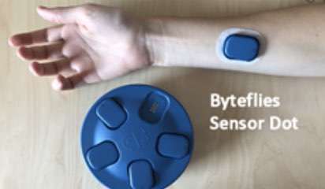
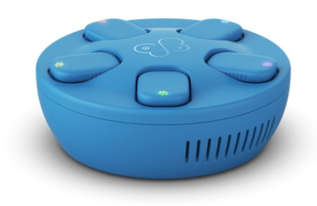
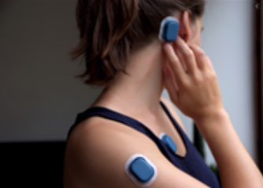
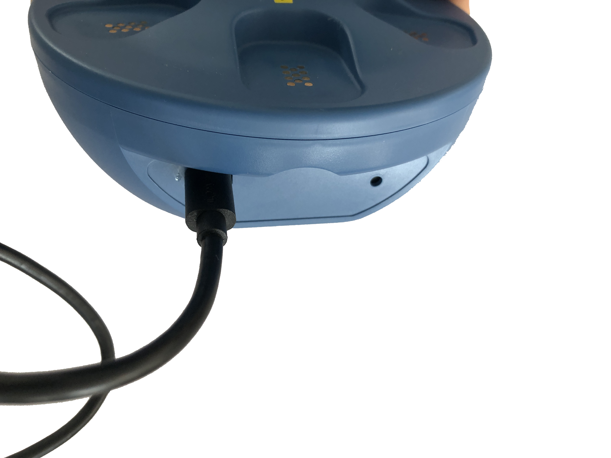
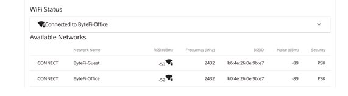
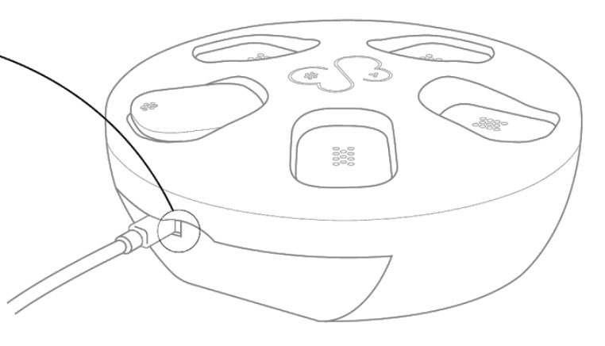
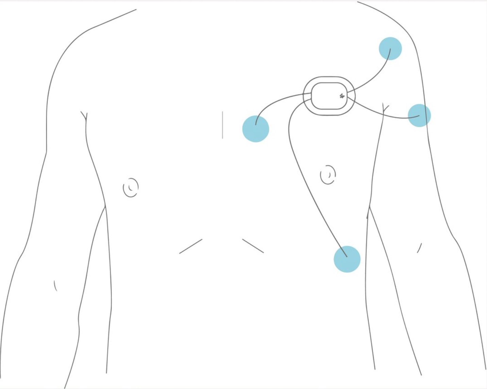
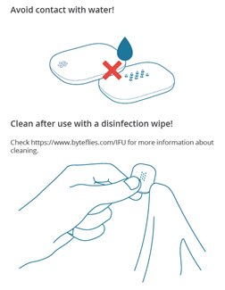
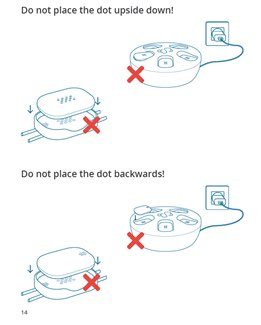
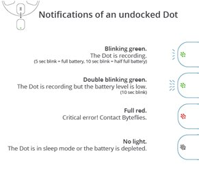

Byteflies (Patient Materials)
- Data transfer protocol for patients
- Device How To / setup for wear
- Troubleshooting/FAQ
- Device return
General Device Introduction
|  |
Sensor Dots by Byteflies is a multimodal wearable device to continuously record physiological signals, in home or in the clinic. Sensor dot can be placed in multiple places on the body to record different types of physiological signals.
How does this device look?
The Sensor Dot is a small blue device (see pictures below) with an LED light indication. Byteflies device comprises the main sensor the Sensor Dot (figure 1), the Sensor Patch (figure 1) and the docking station (figure 2). Sensors Dots are placed into Sensor Patches that can stick on the body and take measurements. The docking station is used to charge the Sensor Dots and transfer data on the Byteflies Cloud.
 |
 |
| Figure 1: Sensor Dot placed into the Sensor Patch | Figure 2: Sensor Dots placed on the Docking Station |
|
| Figure 1: Sensor Dot placed into the Sensor Patch |
| Figure 2: Sensor Dots placed on the Docking Station |
What does it record?
Sensor Dots record high quality brain (electroencephalography, EEG), heart (electrocardiography, ECG) and muscle activity (electromyography, EMG), as well as eye motion (electrooculography, EOG) and general motion data (3-axis accelerometer and gyroscope).
How is it used?
|  |
Sensor Dot is placed in Sensor Patch and then sticks on the indicated location on the body. Sensor Dots can be worn in multiple locations on the body in the same time. It allows continuous measurement up to 24 hours and can be worn during sleep. Contact with water should be avoided – Sensor Dot is water resistant but not waterproof.
Data transfer protocol for patients
$TIME_PERIOD = 5 days,
2x 5 days in total
As a patient: do I need to do anything on a daily basis or all N days?
Yes. You need to make sure you wear, clean and charge the Sensor Dots that the clinician has provided you with. You also need to make sure that the docking station stays connected with a power supply and Wi-Fi, if possible. You need to wear three (3) of the Sensor Dots in the indicated body locations - at your head, your chest and your leg - and charge the three (3) remaining Sensor Dots by placing them on the docking station. You need to alternate them every 24 hours; this means, you place the three (3) Sensor Dots you were wearing back on the docking station to charge them, and you wear the three (3) Sensor Dots that have been charging. You need to repeat this daily (every 24 hours).
While wearing the Sensors Dots, make sure that the Sensor Dots and Sensor Patches stay stable on the body position your clinician advised you to wear. Avoid any contact with water. If the sensor moves or feels unstable – for instance, the patch’s glue wears out, the sensor falls, or a cable (electrode) is detached – contact your clinician as soon as possible.
During wearing, the light on the Sensor Dot should be blinking green - this means the Sensor Dot is recording correctly. If the sensor light turns off or turns red, it is very likely that the sensor needs recharging or there is a technical issue; in both cases you should contact your clinician as soon as possible.
As a patient: do I need to do anything after each individual period of device / app use ended?
After $TIME_PERIOD you will either (i) be provided a new device by a clinician; (ii) visit a clinician and they will transfer data for you; (iii) be asked to keep the device and retrieve the data from the device yourself or (iv) receive another device to wear. They will contact you to arrange an appointment one-week period to the $TIME_PERIOD. If no specific arrangements are made, the device will simply be returned at the end of the study period.
Data transfer will be assessed by your clinician or yourself after $TIME_PERIOD – subject to independent arrangement with your clinician. In the case, you are asked to retrieve data yourself, you need to connect docking station to Wi-Fi. Data transfer is achieved when Sensor Dots are placed on the docking station and when the docking station is connected to Wi-Fi.
If you do not have access to Wi-Fi but your clinician insists that you connect the docking station to Wi-Fi yourself, you will then be provided with a mobile device that will be used as an internet hotspot. Please ask your clinician for further details and support on using the hotspot.
To connect the docking station to Wi-Fi yourself, please follow these steps:
- Connect the charger cable to the Byteflies docking station and plug the device to the power.

|
| Figure 20: Connect Docking station with USB cable and charger provided |
|
| Figure 20: Connect Docking station with USB cable and charger provided |
- Connect the docking station’s network to your internet network.
1) Connect with the BF-XX:XX:XX:XX:XX:XX network and enter the provided password. The password can be found in the IFU on the first page. Please ask your clinician about the password if you have not been provided with the IFU.
2) In your browser, navigate to http://192.168.51.97 . Here you will see a webpage where you can connect the docking station with your own 2.4GHz Wi-Fi network. This is required so that data can be uploaded from the hub to the web.
3) Look in the list on the webpage to your own Wi-Fi-network and click ‘Connect’. After a few seconds the Wi-Fi-status above will indicate ‘Connected to [Your own Wi-Fi-network]’. If this isn’t the case, try again. When this doesn’t work after a few tries, contact Byteflies at arno@byteflies.com
|  |
| Figure 21: Connecting to Byteflies Network shown at the browser |
| Figure 21: Connecting to Byteflies Network shown at the browser |
4) Check the colour of the LED light at the USB port of the docking station. If the colour is green, the installation is successful.
 |
| Figure 22: LED light colour explanation – checking if docking station is connected to Wi-Fi |
|
| Figure 22: LED light colour explanation – checking if docking station is connected to Wi-Fi |
- Place the Dot sensors at any available slot at the docking station. Data transfer can be done by multiple sensors at the same time. The light on the sensor dot will turn orange when data is being transferred from the sensor dot to the docking station.
 |
| Figure 23: Slots on the Docking Station to place Sensor Dots for data transfer |
|
| Figure 23: Slots on the Docking Station to place Sensor Dots for data transfer |
- Once data has been transferred from the Sensor Dot to the Docking Station the Sensor Dot will turn green. Data stored on the Docking Station will be automatically uploaded to the Byteflies cloud platform when an internet connection is active. A light on the back of the Docking Station will blink green when uploading data to the Byteflies cloud (Figure 24).
|  |
| Figure 24: Location of light on Docking Station that indicates connection to cloud platform. |
| Figure 24: Location of light on Docking Station that indicates connection to cloud platform. |
As a patient: do I need to do anything after my full periods of use of a specific device / app ends?
After $TIME_PERIOD you will either (i) be provided a new device by a clinician; (ii) visit a clinician and they will transfer data for you; or (iii) receive another device to wear. They will contact you to arrange an appointment one-week period to the $TIME_PERIOD. If no specific arrangements are made, the device will simply be returned at the end of the study period. The devices will not be returned to you after the full study period ends.
Device How To / setup for wear
How can I get help with using this?
If you have any other questions or concerns, please contact your local study centre:
| Newcastle upon Tyne, United Kingdom | Rotterdam, Netherlands | Kiel, Germany | Muenster, Germany |
|---|---|---|---|
| Person Name, Centre Name, Location | Person Name, Centre Name, Location | Person Name, Centre Name, Location | Person Name, Centre Name, Location |
Newcastle upon Tyne, United Kingdom
Location
Person Name
Centre Name
Rotterdam, Netherlands
Location
Person Name
Centre Name
Kiel, Germany
Location
Person Name
Centre Name
Muenster, Germany
Location
Person Name
Centre Name
What sort of a device / application is this, what is it for and how does it work?
 |
|
Sensor Dots by Byteflies is a multimodal wearable device to continuously record physiological signals, in home or in the clinic. Sensor dot can be placed in multiple places on the body to record different types of physiological signals. It can measure electroencephalography (EEG), as well as other biopotential signals (ECG, EMG, EOG, etc.) and motion data (IMU).
- What will I need to do before I can start using this?
You will be provided with six (6) Sensor Dots, Sensor Patches and one (1) docking station.
Your clinician will help you stick the Sensor Patches in specific locations on your body. These will remain there for the study period. Make sure the skin area where the sensor will be positioned is clean and any hair is removed. In case the glue wears out or there is skin irritation, advice you clinician as soon as possible.
Your clinician will show you how to place the Sensor Dots in the Sensor Patches glued on your body. The Sensor Dot should be cleaned with a wipe before usage.Avoid any water on the sensor throughout the study period – you need to remove Sensor Dots when going for a shower.
You will wear three (3) Sensor Dots and charge the other three (3) on the docking station. You will wear them 24/7 (during the day and night) and alternate them every 24 hours with the ones that have been charged. In order to charge them, you place them in the slots at the docking station. You need to make sure that the docking station stays connected with a power supply.
 |
|
| Figure 25: Sensor Dot placed into the Sensor Patch | Figure 26: Sensor Dots charging placed on the Docking Station |
|
 |
| Figure 27: Docking station connected with power supply | Figure 28: Wearing Sensor Patches with Sensor Dots |
|
| Figure 25: Sensor Dot placed into the Sensor Patch |
| Figure 26: Sensor Dots charging placed on the Docking Station |
|
| Figure 27: Docking station connected with power supply |
| Figure 28: Wearing Sensor Patches with Sensor Dots |
Any account setup required?
No.
Needs pairing with hub-device?
No action is required by the patient unless stated by the clinician.
Any configuration / assembly required?
No. Set up and assembly should be done by the help of the clinician who has provided you with the device. In case, a Sensor Patch detaches from the skin, or the electrodes need re-assembly, contact your local study centre for further instructions.
Troubleshooting/FAQ
The device (Sensor Dot and Docking station) shouldnotbe exposed to water. Avoid contact with water and clean with a wipe before each use. Do not remove the sensor from the patch during the study period to avoid loss of data.
|  |  |
| Figure 29: How to clean the Sensor Dot before a measurement | Figure 30: How to place the Sensor Dot on the docking station |
| Figure 29: How to clean the Sensor Dot before a measurement |
| Figure 30: How to place the Sensor Dot on the docking station |
Light Indications on Sensor Dot
Sensor Dot light colour when placed on the Docking station and when in use is shown below.
The light indication of the sensor dot should be blinking green when recording.
 |
 |
| Figure 33: LED light notifications explanation - Sensor Dot is placed on the Docking Station | Figure 34: LED light notifications explanation - Sensor Dot is placed on the body |
|
| Figure 33: LED light notifications explanation - Sensor Dot is placed on the Docking Station |
| Figure 34: LED light notifications explanation - Sensor Dot is placed on the body |
The device / app seems to have stopped working: what should I do?
If the light of the Sensor Dot turns red or off (no light) then the sensor has stopped working. In the case of red light, the sensor has potentially a technical error and should be temporarily removed from the study. Byteflies should be contacted in the case of a technical error. In the case of no light, the sensor Dot has run out of battery and should be recharged. In both cases, contact your local study centre as soon as possible.
Battery?
In the case where the Sensor Dot light turns off, the sensor’s battery needs recharging. To charge the Sensor Dots, you need to place them on the Docking station and connect the docking station with a power supply.
Connectivity issues?
There might be a difficulty connecting the Docking station with the internet; in that case repeat both steps as described in Section 3. If the difficulty remains, contact Byteflies.
Need to restart or log in again?
Not applicable.
Using the device / app is uncomfortable to me: what can I do?
If the Sensor Dot feels stable but you find it uncomfortable to wear, consider changing cloths. If the Sensor Dot or the electrodes feel unstable, contact your clinician as soon as possible to help you stabilise it. If you notice any skin irritation, remove the Sensor Patch and the electrodes and contact your clinician as soon as possible. If the Sensor Dot is placed on the head, a mild discomfort is normal; please consult with your clinician on how to make it more comfortable for you.
Adjust wear style?
Any cloths should be suitable to wear; depending on the location of the Sensor Dot, lose or tight clothes and the use of elastic bands might create a different feeling. Advice your clinician in order to find what works best for you.
Adjust usage pattern?
If you feel wearing the Sensor Dot works better during certain hours of the day whereas it creates discomfort during others; talk to your clinician on how to adapt the usage pattern better to fit with your needs and the study needs.
Device return
What do I do when a period of device use is over?
Yes. After ($TIME_PERIOD – N DAYS) of use you will arrange a visit with your local study centre and return the device.
Before the device is returned or disposed of: does any data need to be transferred?
No.
Do I need to return the device somewhere?
You will be contacted by your clinician to arrange a meeting and return the device.